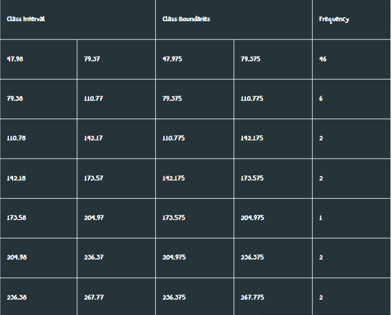
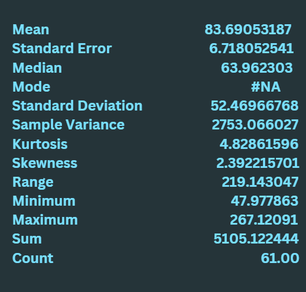
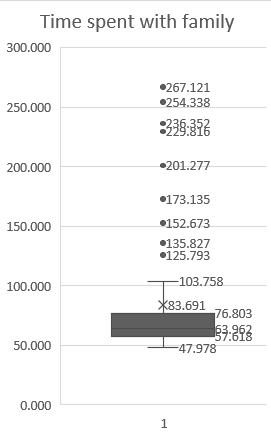

Summary Statistics
Family time is crucial for building and maintaining strong relationships, fostering emotional support, and creating a sense of belonging. It provides an opportunity for open communication, bonding, and shared experiences, which can strengthen the family unit. Quality family time also contributes to the emotional well-being of both children and adults, promoting positive values, traditions, and memories that can last a lifetime.
Frequency data table:
Descriptive analysis:
The mean is 83.69. The median is 63.96. The standard Deviation is 52.46. The above analysis and histogram show that out of the 61 respondents, majority spend around 63.96 minutes on average with their family. The median is used here again because it is more appropriate to report on it because of the asymmetrical distribution and because it is less affected by the outliers in the data. Though it is observed that majority of the respondents spend their time with family in the 47.98 - 79.37 minute range, there are still many outliers in the data that far exceed the range. As observed in the descriptive analysis, the standard deviation is very high again, which could indicate a major difference between the upper portion of the data and the lower portion of it. And as observed in the histogram, we can see how the data is distributed.
Box and Whisker plots:
The skewness is 2.39. The 1st quartile is 57.618. The median is 63.962. The 3rd quartile is 76.803. The shape of the distribution of time spent alone is asymmetrical and positively skewed or skewed to the right. There are multiple outliers that were observed, and most data observed were spread out with an IQR of 19.185.